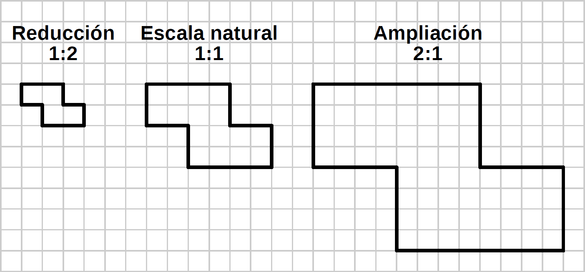
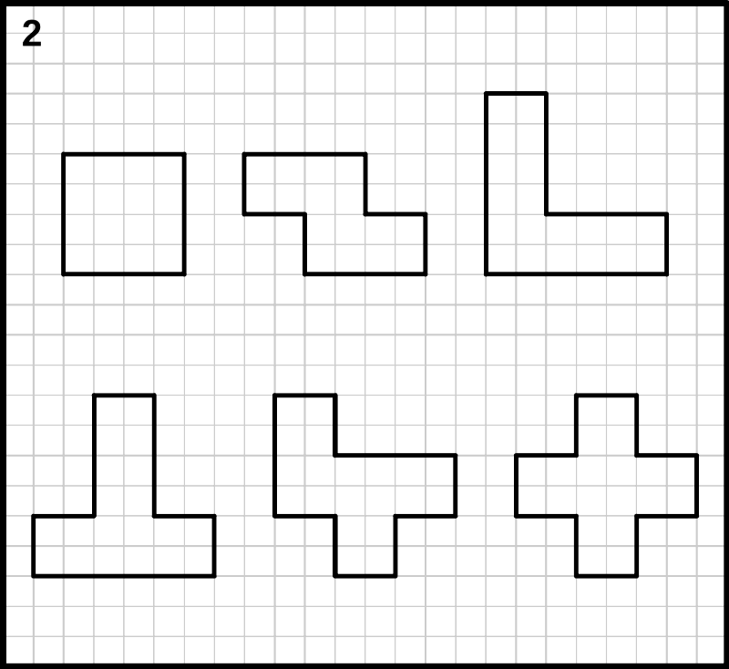
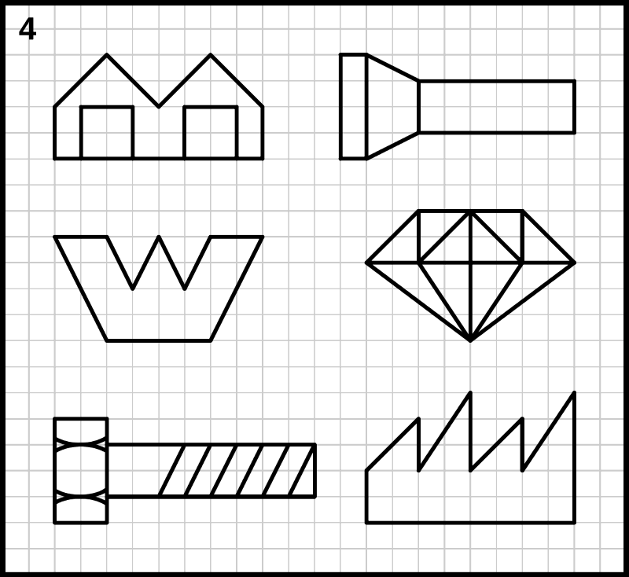

Scales¶
Representation of objects at different sizes.
{kind=link}
When a large object has to be represented on a plan, for example, a truck, it is not practical to draw it at its actual size. In these cases, it is convenient to draw the object at a reduced size. If the objects are too small, for example, an electronic component, it is convenient to make the drawing with an enlarged size.
- Scale
It is the enlargement or reduction ratio with which an object is drawn on paper.
If the scale starts with a number greater than one it is a magnification scale (for example, a 10:1 scale). If the scale starts with one followed by a number greater than one, it is a reduction scale (for example, a 1:10 scale).
- Natural scale
- It is used to represent objects with a drawing of the same size as reality. The natural scale is also represented as a 1:1 scale.
- Scale of reduction
- It is used when the size of the object is larger than the size of the sheet of paper. A 1:10 scale means that the drawing will be ten times smaller than the actual object. For example, a 200cm closet drawn at a 1:10 scale will have a size of 20cm on the sheet of paper.
- Magnification Scale
- It is used to represent small objects. A 10:1 magnification scale will serve to represent a 5mm clock gear, with a size of 50mm on paper.
Normalized scales¶
Although any scale value can be used, in practice it is recommended to use certain standard values on technical drawings to make the dimensions easier to read. These are some of the standardized scales:
| Reduction | 1:2 | 1:5 | 1:10 | 1:20 | 1:50 | 1:100 | 1:200 | 1:500 |
| Extension | 2:1 | 5:1 | 10:1 | 20:1 | 50:1 |
In special cases, such as building construction, intermediate scales such as 1:40 scale or 1:25 scale are used.
The following table shows some examples of scales and the size of the objects that can be represented at that scale on a sheet of A4 or folio size paper.
| Scale | Size that can be represented on a sheet of paper
Object example
|
|---|---|
| 1:100 | Up to 25 x 15 meters in a sheet
House, truck, big room
|
| 1:20 | Up to 5 x 3 meters in a sheet
Bookshelf, cabinet, car, room
|
| 1:10 | Up to 250 x 150 centimeters in a sheet
Bicycle, television, chair
|
| 1:2 | Up to 50 x 30 centimeters in a sheet
Video game console, bottle, saw
|
| 1:1 (Natural) | Up to 25 x 15 centimeters in a sheet
Screwdriver, tablet
|
| 2:1 | Up to 12 x 7 centimeters in a sheet
Smartphone, screw
|
| 10:1 | Up to 25 x 15 millimeters in a sheet
Watch parts, micro SD memory
|
Scales exercises¶
This exercise consists of copying the figures on a grid paper with the same size that appears on the printed sheet. The figure will then be copied at a 2:1 magnification scale, twice its size. Finally, the figure must be copied with a reduction scale of 1:2, to half its size.
The first plate contains simple figures, formed only with vertical lines and horizontal lines. The second sheet contains figures with vertical and horizontal lines, figures with inclined lines, and figures with circles.
Sheets with figures to draw to scale.
|  |  |
{kind=link}
{kind=link}